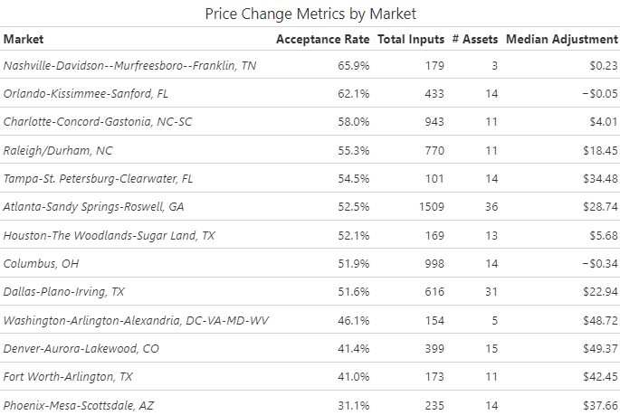

Since May 2024, 52.3% of RM inputted base rents have fallen within the range given by RevenX
|
| Rate of acceptance of RMP recommendation has steadily decreased since its inception |
Of the ~48% that do not fall within the given range:
The magnitude of the edits vary widely by market, unit group, and asset.
|  |
 |
Each dot is an individual base rent adjustment. |
 |
 |